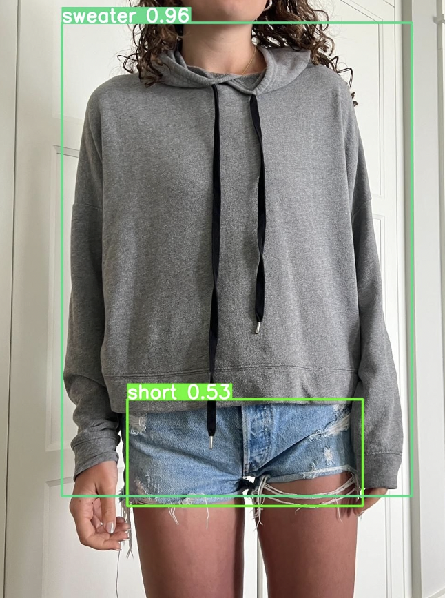

Clothing Dashboard
Worked with another intern at Northern Trust in our free time and enhanced an earlier idea I worked on (in Intro to Artificial Intelligence), and that we shared a passion about. We created an application using a model that used machine learning to automate post creation for secondhand clothing platforms (Poshmark, Depop, eBay). Below is one example of an iteration of the model. We noticed it kept identifying hoodies as sweaters, so we added more data with hoodies of visible drawstrings and hoods and it performed far better. The goal of this platform was to use ML to promote circular economy principles.
